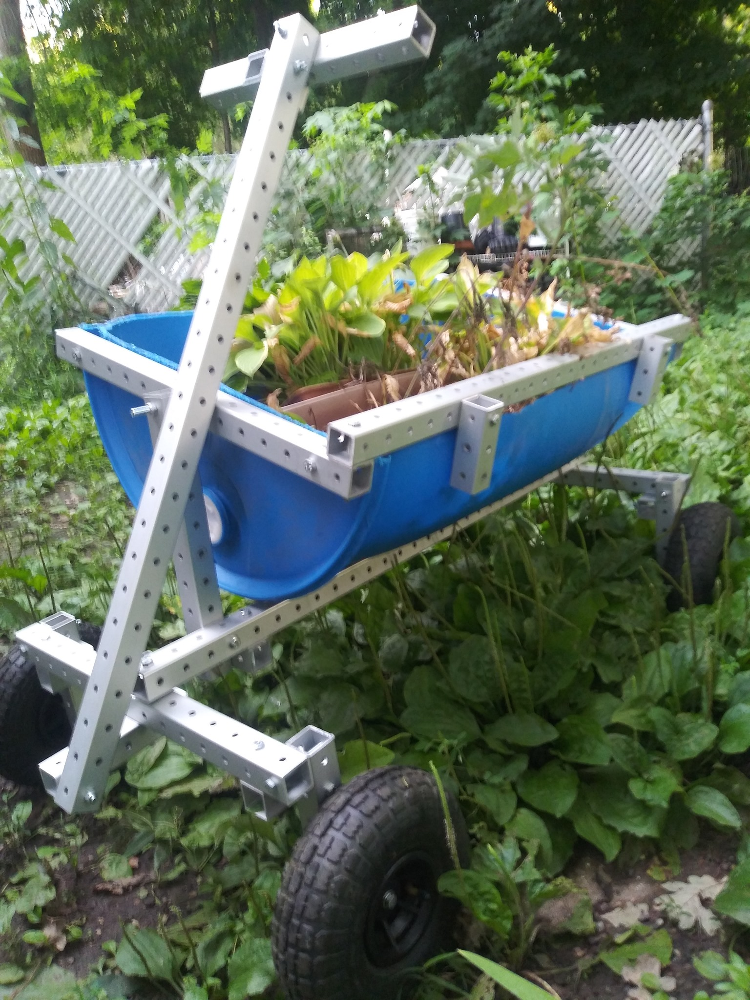
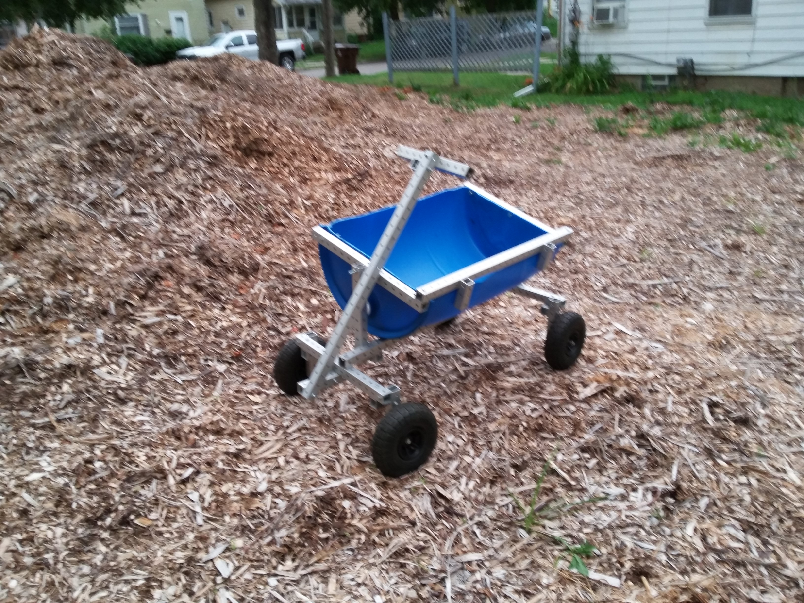
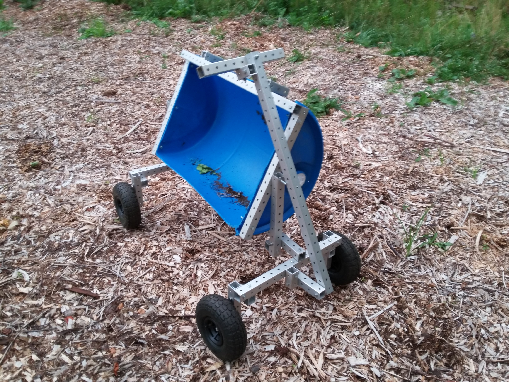
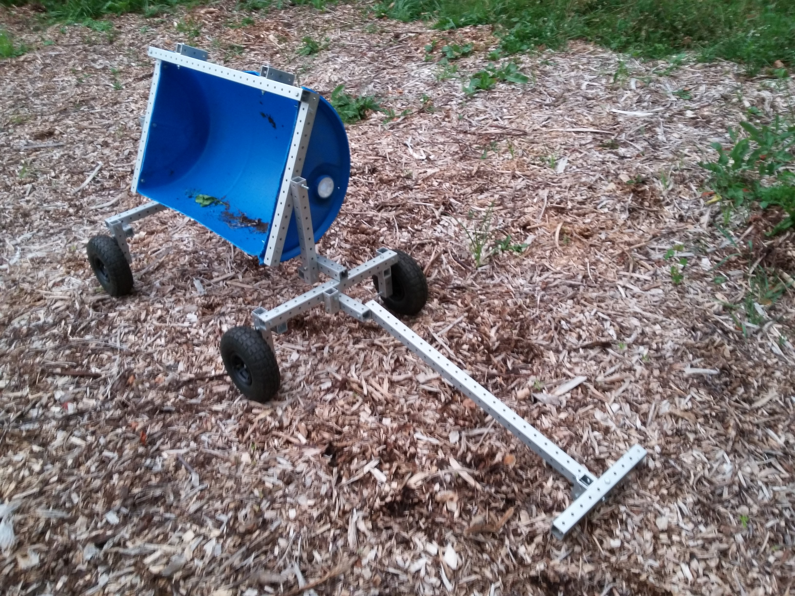
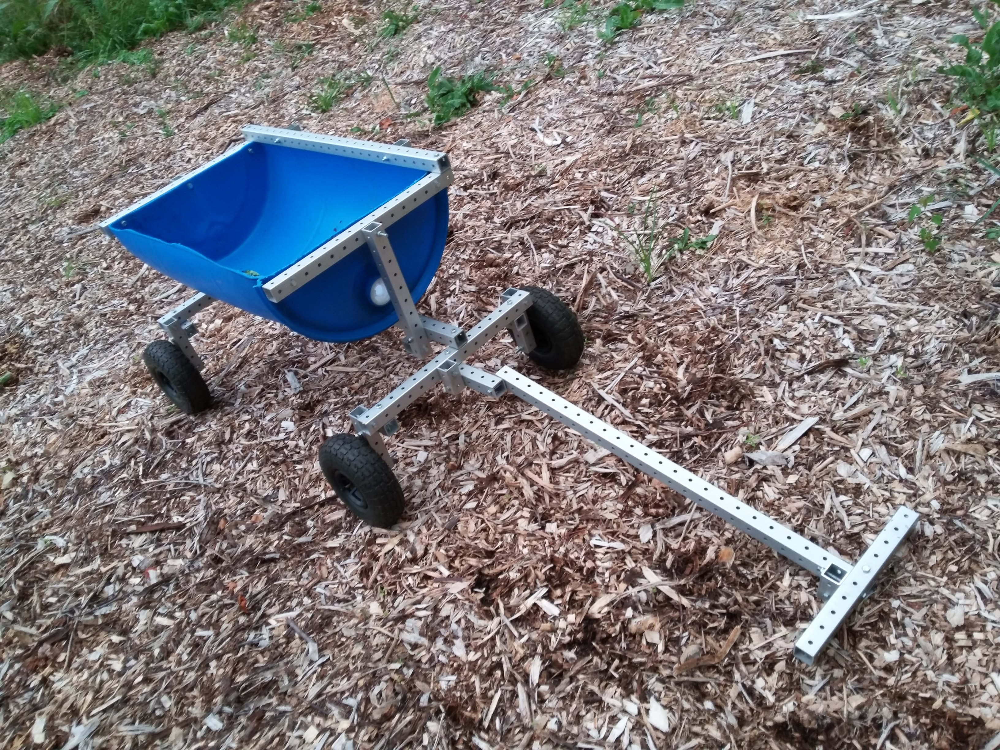

carts revision 3889
^ Projects infobox ^^
| image | |
| designer | |
| date | |
| tools | [[wrenches|Wrenches]] |
| parts | [[frames|Frames]], [[nuts|Nuts]], [[bolts|Bolts]], [[plates|Plates]], [[end_caps|End caps]], [[barrels|Barrels]] |
| techniques | [[shelf_joints|Shelf joints]], [[tri_joints|Tri joints]] |
| stl | |
| git | |
Challenges
Many loads are too heavy to carry by hand. Many tasks too strenuous to complete by hand.
Approaches
Wheelbarrows, moving dollies, and other carts make impossible jobs possible, and hard
jobs easy. Two large wheels on either side aid stability with heavy loads across rough
terrain.





Interoperability
Development targets
Double-thickness coroplast tub w/ folded-over edges for triple thickness and smooth edge